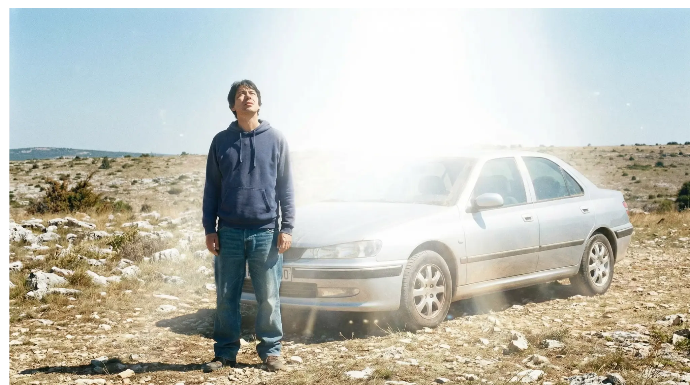
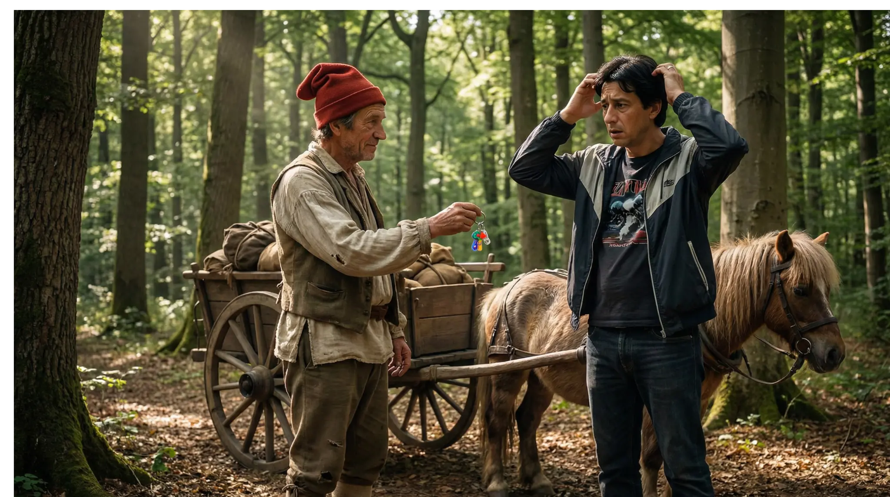
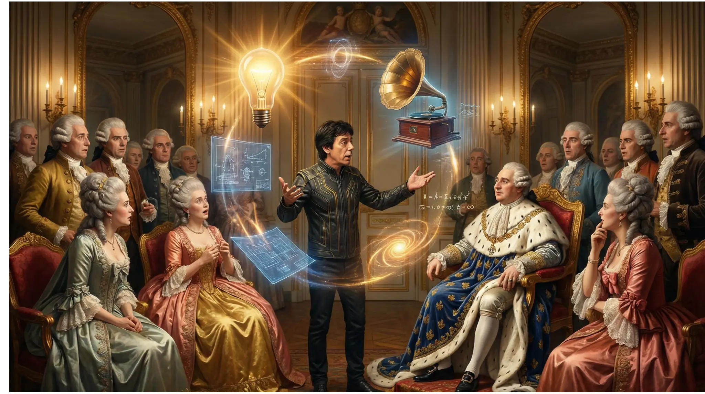
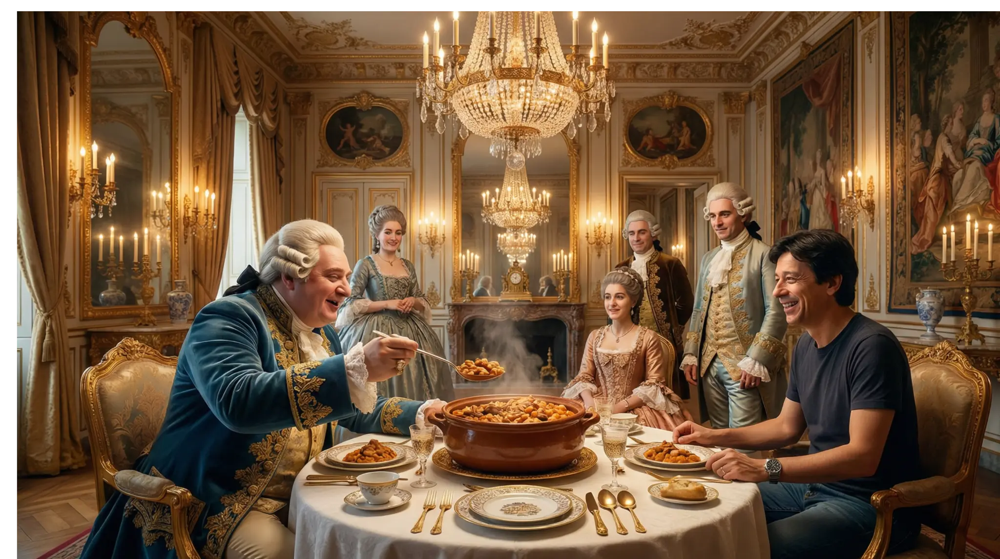
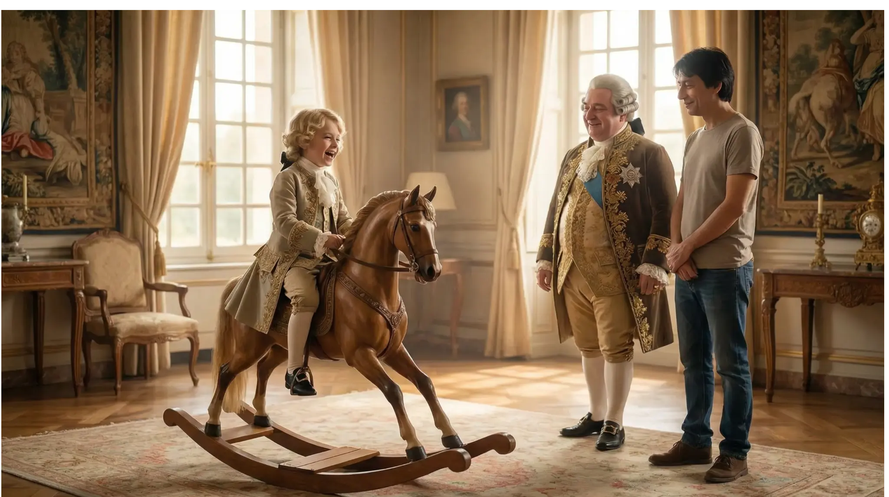
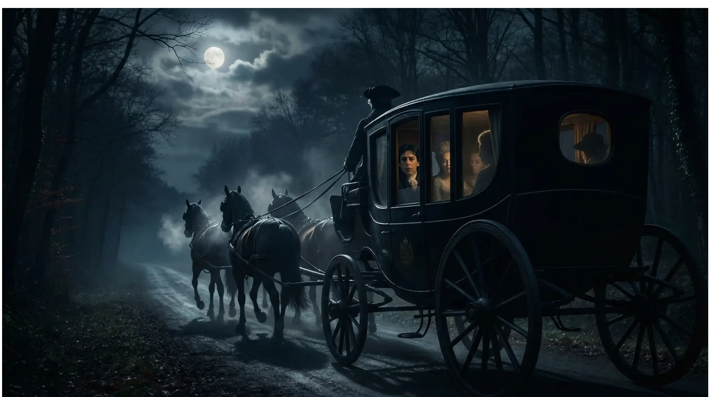
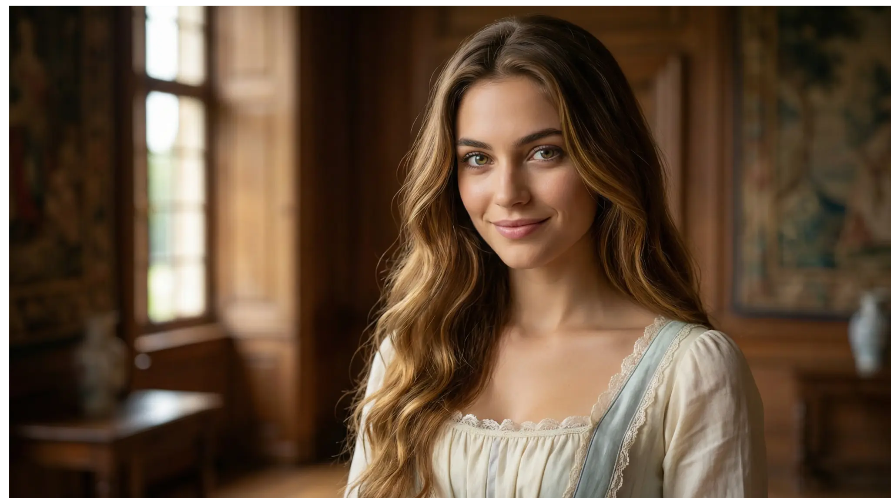
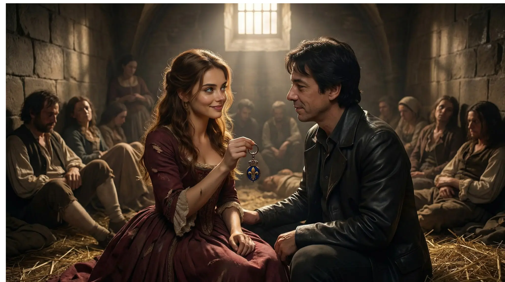
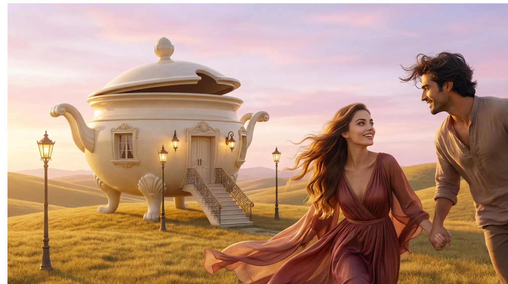

Une nouvelle de Gil Sawas (2005)
ACCUEILJe roulais sur le plateau du Larzac dans une automobile confortable. La direction était assistée, il faisait un peu chaud dehors, mais c'était pas grave, car j'avais la clim'…Je me permis d'adopter une position qui me semblait être l'attitude virile de l'homme sans soucis, et bien nourri.
Je roulais sur le plateau du Larzac, sur une route qui n'en finissait pas, à la recherche d'un raccourci que jamais je ne trouva.
Soudain, et pour moi, c'est surtout à partir de maintenant que ça devient bizarre, je me sentis ébloui par une aveuglante lumière blanche. Je fermai les yeux, et commençai à m'endormir, et dans mon cerveau délirant, des nains portaient des cierges en hurlant.

L'éblouissement sur le Larzac - La lumière blanche qui transporte Gil
Mais même les meilleures choses ont une fin, et au matin, je me réveillai, pour le moins étonné. Au début, je n'en crus pas mes yeux. Puis, je finis par les croire : J'étais en forêt de Rambouillet…
Et ce qui me semblait le plus ahurissant, c'est que ce n'était pas exactement la forêt de Rambouillet telle que nous la connaissons tous. Non…Quelques légères différences. Les arbres pas vraiment au bon endroit. Vous voyez, quoi ? La forêt de Rambouillet telle qu'elle pouvait l'être il y a deux cents ans…
Ah, si, un homme s'avançait sur le chemin, proche de moi. Il portait un bonnet phrygien, ce qui me fit penser que nous devions être au moins en 1791, et sans doute guère plus, il n'a pas été à la mode si longtemps…

Rencontre avec le manant - Forêt de Rambouillet, bonnet phrygien
« Sois le bienvenu, Ô noble étranger aux yeux couleur de jais noir. - Merci, ô le plus grand d'entre les rois. - On me dit que tu es habile dans l'art de faire des tours. - Vous n'en croirez pas vos augustes yeux, Sire. Je viens de très loin par delà les mers, d'un pays où on connaît beaucoup de secrets, vous allez voir, nous allons faire de grandes choses ensembles, je vais vous tailler un Empire à faire pâlir Napoléon, on va révolutionner l'histoire, et vous me nommerez Duc et me donnerez des terres ! La bombe atomique ! Majesté, on va faire tout péter à la bombe atomique !!
- Ah ? - Oui, Monseigneur. E = mc2, c'est pas fabuleux, ça ?

Gil à la cour - Présentant ses inventions à Louis XVI
« Pas tinkstenn ?? » Dit Marie-Antoinette, déçue. - C'est pas grave, Ma Reine. » Je disais ça, mais je commençais à me demander ce que je pouvais leur apporter de ma civilisation.
" Allons aux cuisines, vos majestés, on réfléchira mieux devant un bon cassoulet. - Cassoulet ?? Qu'est-ce que c'est ?? S'écrièrent-ils comme un seul homme. - Vous verrez, je vous donnerai la recette. C'est de mon pays. Venez, Majesté, vous aussi, Majestère, dis-je en offrant mon bras à une Marie-Antoinette rosissante….
Une demie-heure plus tard, nous faisions joyeusement ripaille, buvant du vin de fronton, écoutant les blagues salaces de Louis, qui est champion, pour ça.

Le cassoulet aux Tuileries - Louis XVI et Marie-Antoinette découvrent le plat
Le Roi voulait me présenter son fils, ça lui faisait plaisir. Dans une pièce voisine, il y avait là un gosse, qui faisait à dada sur un cheval de bois.
- Mon fils Louis, annonça-t-il avec emphase, héritier de la couronne de France. - Non ? …Vous voulez dire que… - C'est lui qui me succèdera. Louis XVII…Le Dauphin, le fameux petit mitron, Louis XVII…Pas près de succéder à son papa.
Evidemment, je n'allais pas révéler son avenir au petit Louis, si frêle, tout fier sur son petit cheval. Je lui tapotai gentiment la joue : « Oh ! Mais c'est un grand garçon. C'est de la graine de grand Roi, ça ! Et ça va gouverner tout seul la France, hein ?».

Le petit Louis XVII - L'enfant sur son cheval de bois
Je plongeai avec délices dans les profondeurs du matelas, me disant qu'un Roi, c'est une bonne relation dans la vie, puis m'endormis. Pas longtemps. Une main me secouait, cherchant frénétiquement à me réveiller. La voix du Roi :
« Gil !!! - Fais chier, Louis, dors ! - Allez, réveille-toi, il faut qu'on s'enfuie. - Pourquoi ? - Mes conseillers m'ont dit de le faire. - On le fera demain, alors ! - Allez viens, quoi, sois pas le mauvais bougre. - Et où tu veux fuir ? - J'ai des potes à Varennes.

La fuite à Varennes - La berline dans la nuit
Mais le destin en avait décidé autrement. Arrêtés à Varennes, nous fûmes ramenés à Paris. Le procès fut rapide, la condamnation à mort inévitable. Et c'est à la Conciergerie que j'ai rencontré Lisa.
Elle était belle, lumineuse même dans cette prison sombre. Ses yeux contenaient une profondeur infinie, comme si elle voyait au-delà du temps et de l'espace. Elle était prisonnière aussi, condamnée pour avoir aidé le Roi.
Nous nous sommes aimés dans l'ombre de la mort, sachant que nos jours étaient comptés. Chaque moment ensemble était une éternité. Elle me parla de mondes autres, de dimensions où l'amour transcende la mort.

Lisa à la Conciergerie - Belle et lumineuse
Le porte-clés que Louis XVI m'avait offert, je l'avais gardé précieusement. C'était un objet magnifique, en métal doré, avec le blason royal gravé dessus. Je le donnai à Lisa comme gage de mon amour.
Mais c'était ce porte-clés qui nous a perdus. Découvert par les gardes, il a révélé notre lien avec le Roi. Lisa a été accusée de complicité. La sentence fut scellée.
Ce porte-clefs portait la poisse. Il traversait les temps, les mondes, portant avec lui la marque de notre destin. Un invariant qui se conservait à travers les transformations du temps.

Le porte-clés fatal - Le moment où Lisa reçoit le porte-clés
La guillotine. Le bruit de la lame. L'obscurité. Et puis… la lumière.
Je me réveillai dans un au-delà magnifique, une forêt de lumière et de silence. Et là, m'attendait Harold, un ami que je n'avais jamais rencontré en cette vie, mais que je reconnaissais immédiatement. Nous nous étions déjà rencontrés, il y a des siècles, en Inde. Les âmes se retrouvent à travers les temps.
« Gil, me dit-il avec un sourire bienveillant, tu es enfin arrivé. Lisa t'attend. Ici, le temps n'existe plus. Ici, la pensée crée la réalité. Ici, l'amour est la seule loi. »
L'au-delà : Harold - La rencontre mystérieuse
Et je la vis. Lisa. Radieuse, éternelle, libre. Elle m'attendait près d'une source cristalline qui coulait doucement dans la clairière.
« Gil, murmura-t-elle, tu es venu. Je savais que tu viendrais. »
Nous nous embrassâmes, et dans cet instant, je compris que l'amour était la seule réalité qui transcendait le temps, l'espace, la mort elle-même. Que la conscience façonnait l'univers. Que tout était lié par des invariants invisibles mais indestructibles.
Harold nous souriait, sachant que nous avions compris le secret de l'existence.
Retrouvailles avec Lisa - La source dans la clairière
« Venez, dit Harold, je veux vous montrer quelque chose. »
Il nous conduisit à travers la forêt de lumière, et là, apparut une maison. Mais pas une maison ordinaire. C'était une maison en forme de soupière, exactement comme Lisa l'avait imaginée.
« Ici, expliqua Harold, la pensée crée la réalité. Lisa a pensé à cette maison, et elle existe maintenant. Vous pouvez voler si vous le voulez. Vous pouvez changer le jour en nuit. Vous pouvez faire apparaître tout ce que vous désirez. »
Et c'est ainsi que nous avons trouvé notre paradis. Une maison-soupière au cœur d'un au-delà où l'amour règne en maître, où la conscience est reine, où le temps n'existe plus que comme une danse éternelle.
Mon café était prêt. Toujours.

La maison-soupière - Leur nouvelle vie ensemble
« Cette nouvelle contient tous les germes de YON et LUZ, écrite 20 ans avant leur formalisation mathématique. »
Écrite le 2 avril 2005 | Illustrée en 2026